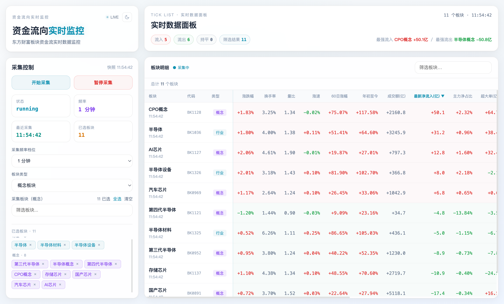
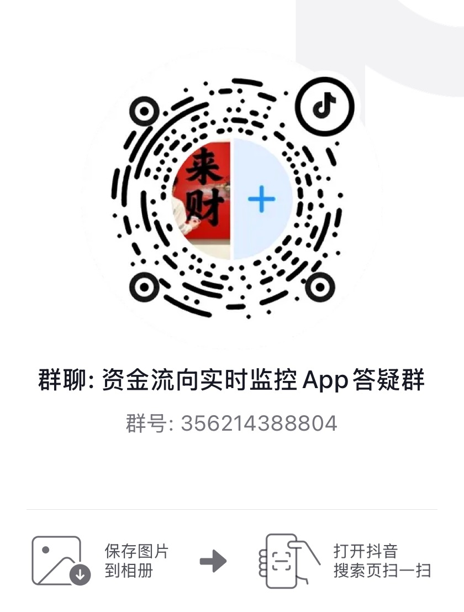

板块资金流实时监控
东方财富板块资金流实时监控桌面端 · 安装包仅 4.3 MB · 无需后端服务，开箱即用


⚠️ GitHub 国内访问不稳定，以上链接已走国内镜像加速。若无法访问，请尝试 直接访问 GitHub
东方财富板块资金流实时监控桌面端 · 安装包仅 4.3 MB · 无需后端服务，开箱即用
盯着盘面看板块资金轮动，是很多短线选手的日常。但打开网页版要忍受广告和杂乱的布局，用手机盯又不够直观。
本工具直接对接东方财富板块资金流接口，抓取板块资金数据并以表格/走势图展现，帮你快速判断资金在行业、概念、地域板块间的切换方向。

轻量、实时、可配置的板块资金流监控工具
直接对接东方财富板块资金流接口，1/3/5 分钟三档采集频率，自动轮询
最新资金流快照，支持涨跌幅、净流入、换手率等多字段排序，快速定位领涨/领跌板块
选中板块的资金流走势图，直观反映资金进出节奏
支持行业 / 概念 / 地域三大板块类型一键切换，从全集中自由勾选关注的板块
一键开始/暂停，实时显示采集状态和接口错误提示
支持深色/浅色主题切换，盯盘更舒适
扫码加入抖音群，获取最新版本通知、使用反馈和交流

抖音扫描上方二维码加入群聊
如果下载按钮无法访问，请尝试 直接访问 GitHub Releases
| 平台 | 安装包 | 说明 | |
|---|---|---|---|
| Windows ⊞ | *-Setup-*.exe |
NSIS 安装包，双击安装后使用 | 国内加速下载 → |
| macOS 🍎 | *.dmg |
支持 Intel & Apple Silicon | 国内加速下载 → |
项目采用的技术和工具